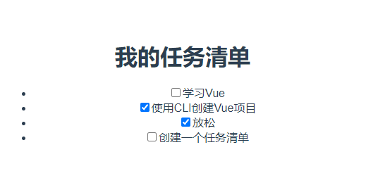

vue框架
现在我们已经有了一个可以工作的组件。接下来我们将添加更多的 ToDoItem 组件到我们的应用中。本文我们会添加一系列待办事项到 App.vue 组件并使用 v-for 指令遍历它们，将它们的每一项展示在 ToDoItem 组件中。
-
利用v-for指令渲染组件列表
一个列表当然不仅仅只有一个事项，所以我们可以利用一些特定的指令来渲染它，Vue 中的 v-for 可以用来实现这种效果。它是 Vue 自带的指令，用于在 template 中实现循环，我们可以利用它将数组中的各项重复渲染成指定的特征。
-
添加一些需要渲染的数据
首先我们需要准备一个待办事项数组。添加 data 属性到 App.vue 组件对象中，它包含一个 ToDoItems 字段，其值是待办事项数组。这些数组中包含了label和done属性。
如下：export default { name: "app", components: { ToDoItem, }, data() { return { ToDoItems: [ { label: "学习Vue", done: false }, { label: "使用CLI创建Vue项目"，done:true}, { label: "放松", done: true }, { label: "创建一个任务清单", done: false }, ], }; }, };现在已经创建了一个包含两个属性的列表，我们需要用v-for将其渲染在我们的页面上。
v-for类似 JavaScript 中的 for...in 循环——v-for="item in items"——items 是你要迭代的列表，item 是数组中当前元素的引用。
-
-
遍历数据之后要做的就是传递数据，既然要传递数据，我们要做的就是给数据添加一个独有的key值，这样就能给v-for识别列表中的元素。
为了确保 Vue 能够准确地比较 key 属性，它们需要是字符串或数字值。虽然使用名字字段很好，但这个字段最终将由用户输入控制，这意味着我们不能保证名字是唯一的。然而，我们可以使用 lodash.uniqueid()。
如下：import uniqueId from "lodash.uniqueid"; -
引入key值之后，我们需要添加 id 字段到 ToDoItems 数组的每一个元素中，并且将他们赋值为 uniqueId('todo-')。 此时，App.vue 中的 script 元素内容应该如下：
import ToDoItem from "./components/ToDoItem.vue"; import uniqueId from "lodash.uniqueid"; export default { name: "app", components: { ToDoItem, }, data() { return { ToDoItems: [ { id: uniqueId("todo-"), label: "学习Vue", done: false }, { id: uniqueId("todo-"), label: "使用CLI创建Vue项目",done:true}, { id: uniqueId("todo-"), label: "放松", done: true }, { id: uniqueId("todo-"), label: "创建一个任务清单", done: false }, ], }; }, }; -
在你的 App.vue 模板中添加 v-for 指令和 key 属性到 li 元素：
<ul> <li v-for="item in ToDoItems" :key="item.id"> <to-do-item label="我的任务清单" :done="true"></to-do-item> </li> </ul>这样修改后，
- 标签中的 JavaScript 表达式就可以访问 item 了，这意味着我们可以使用 v-bind 来传递 item 对象的字段给 ToDoItem 组件了。这非常有用，我们想让列表中的待办事项的 label 值展示到它的 label 中，而不是显示一个静态的“My Todo Item”。此外，我们想让它们的 checked 状态反映它们的 done 字段，而不是总设置为 done="true"。
-
把 label="My ToDo Item" 改成 :label="item.label", :done="false" 改成 :done="item.done"，像下面这样：
<ul> <li v-for="item in ToDoItems" :key="item.id"> <to-do-item :label="item.label" :done="item.done"></to-do-item> </li> </ul>
现在再去运行我们的网页，就能看到数据已经被遍历并且渲染到了页面中，前面的复选框也按照我们的需求显示，如果你查看源码的话，你会发现输入都有了唯一的 id，它取自 App 组件中的对象。
如下：  -
-
添加一些需要渲染的数据
-
重构
在这里我们可以做一个小小的重构。我们可以把 id 变成一个 prop，而不是在 ToDoItem 组件中为复选框生成它。虽然这不是严格意义上的需要，但它使我们更容易管理，因为我们已经需要为每个 todo 项目创建一个唯一的 id。
- 添加一个新的 prop id 到 ToDoItem 组件。
- 标记它为 required，类型是 String。
- 为防止命名冲突，删除掉 data 属性中的 id 字段。
- 现在不需要再使用 uniqueId 了，所以需要删除掉 import uniqueId from 'lodash.uniqueid'; 这行，否则你的应用会报错。
ToDoItem 中的 <script> 内容应该如下所示：
在 App.vue 组件中将 item.id 作为 prop 传递给 ToDoItem 组件。你的 App.vue template 应该如下所示：<script> export default { props: { label: { required: true, type: String }, done: { default: false, type: Boolean }, id: {required:true,type:String}, }, data() { return { isDone: this.done, }; }, }; </script><ul> <li v-for="item in ToDoItems" :key="item.id"> <to-do-item :label="item.label" :done="item.done" :id="item.id"></to-do-item> </li> </ul>
你渲染后的站点看起来是没有变化的，但是这次重构使得 item.id 像其他参数一样，作为 prop 从 App.vue 传递给 ToDoItem。现在代码变得更有逻辑性和一致性。